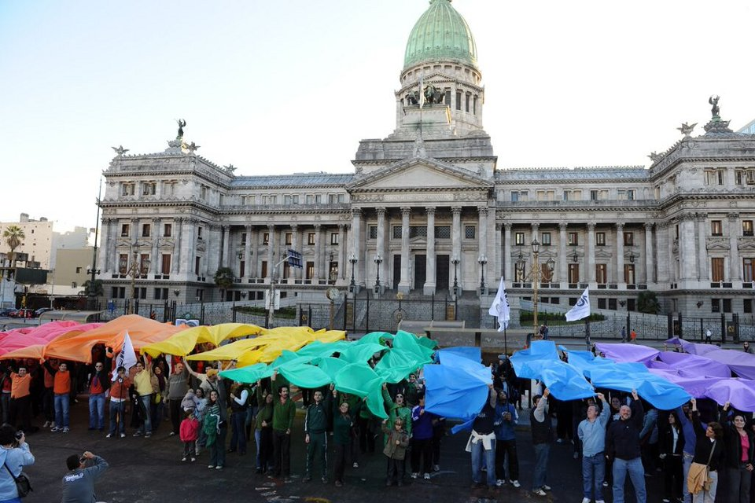

El Congreso aprueba la Ley de Matrimonio Igualitario
El 15 de julio de 2010, el Congreso argentino aprobó la Ley de
Matrimonio Igualitario, convirtiendo a Argentina en el primer país
de América Latina en legalizar el matrimonio entre personas del
mismo sexo.

Argentina declara la independencia
El 9 de julio de 1816, Argentina declaró su independencia de España
en una asamblea reunida en San Miguel de Tucumán, marcando el inicio
de su camino como nación independiente.
Argentina gana la Copa Mundial de la FIFA 1986
El 29 de junio de 1986, la selección argentina de fútbol, liderada
por Diego Maradona, ganó la Copa Mundial de la FIFA al vencer a
Alemania Federal 3-2 en la final, celebrada en el Estadio Azteca de
México.
Argentina atraviesa una crisis económica
En el año 2001, Argentina enfrentó una de las peores crisis
económicas de su historia, caracterizada por altas tasas de
desempleo, devaluación de la moneda y una profunda recesión.
La Revolución de Mayo
El 25 de mayo de 1810, se produjo en Buenos Aires la Revolución de
Mayo, que marcó el inicio del proceso de independencia de Argentina
respecto de España.
El Congreso aprueba la Ley de Matrimonio Igualitario
El 15 de julio de 2010, el Congreso argentino aprobó la Ley de
Matrimonio Igualitario, convirtiendo a Argentina en el primer país
de América Latina en legalizar el matrimonio entre personas del
mismo sexo.
Argentina gana la medalla de oro en fútbol en los Juegos Olímpicos
de Atenas 2004
El 28 de agosto de 2004, la selección argentina de fútbol ganó la
medalla de oro en los Juegos Olímpicos de Atenas 2004 al vencer a
Paraguay en la final con un marcador de 1-0.
Argentina declara la independencia
El 9 de julio de 1816, Argentina declaró su independencia de España
en una asamblea reunida en San Miguel de Tucumán, marcando el inicio
de su camino como nación independiente.
Argentina gana la Copa Mundial de la FIFA 1986
El 29 de junio de 1986, la selección argentina de fútbol, liderada
por Diego Maradona, ganó la Copa Mundial de la FIFA al vencer a
Alemania Federal 3-2 en la final, celebrada en el Estadio Azteca de
México.
Argentina atraviesa una crisis económica
En el año 2001, Argentina enfrentó una de las peores crisis
económicas de su historia, caracterizada por altas tasas de
desempleo, devaluación de la moneda y una profunda recesión.
La Revolución de Mayo
El 25 de mayo de 1810, se produjo en Buenos Aires la Revolución de
Mayo, que marcó el inicio del proceso de independencia de Argentina
respecto de España.